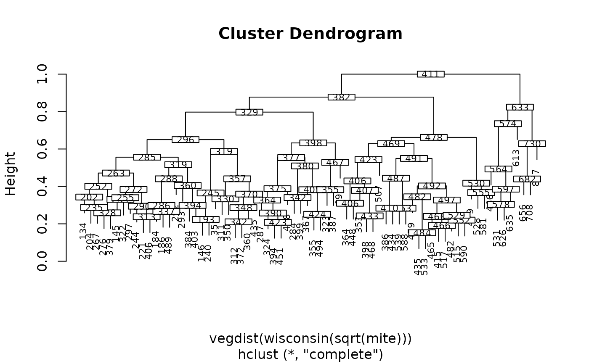

reorder.hclust.RdFunction takes a hierarchical clustering tree from
hclust and a vector of values and reorders the
clustering tree in the order of the supplied vector, maintaining the
constraints on the tree. This is a method of generic function
reorder and an alternative to reordering a
"dendrogram" object with reorder.dendrogram
hierarchical clustering from hclust.
numeric vector for reordering.
a function for weights agglomeration, see below.
return "internal" nodes or "terminal" nodes (also
called "leaves").
scalars or vectors giving the numbers of desired groups or the heights
where the tree should be cut (passed to function
cutree).
additional arguments (ignored).
Dendrograms can be ordered in many ways. The reorder function
reorders an hclust tree and provides an alternative to
reorder.dendrogram which can reorder a
dendrogram. The current function will also work
differently when the agglo.FUN is "mean": the
reorder.dendrogram will always take the direct mean of
member groups ignoring their sizes, but this function will used
weighted.mean weighted by group sizes, so that the
group mean is always the mean of member leaves (terminal nodes). If
you want to ignore group sizes, you can use unweighted mean with
"uwmean".
The function accepts only a limited list of agglo.FUN
functions for assessing the value of wts for groups. The
ordering is always ascending, but the order of leaves can be
reversed with rev.
Function scores finds the coordinates of nodes as a two-column
matrix. For terminal nodes (leaves) this the value at which the item
is merged to the tree, and the labels can still hang below this
level (see plot.hclust).
Function cutreeord cuts a tree to groups numbered from left to
right in the tree. It is based on the standard function
cutree which numbers the groups in the order they appear
in the input data instead of the order in the tree.
Reordered hclust result object with added item
value that gives the value of the statistic at each merge
level.
These functions should really be in base R.
hclust for getting clustering trees,
as.hclust.spantree to change a vegan minimum
spanning tree to an hclust object, and
dendrogram and reorder.dendrogram for an
alternative implementation.
## reorder by water content of soil
data(mite, mite.env)
hc <- hclust(vegdist(wisconsin(sqrt(mite))))
ohc <- with(mite.env, reorder(hc, WatrCont))
plot(hc)
plot(ohc)
## label leaves by the observed value, and each branching point
## (internal node) by the cluster mean
with(mite.env, plot(ohc, labels=round(WatrCont), cex=0.7))
ordilabel(scores(ohc), label=round(ohc$value), cex=0.7)

## Slightly different from reordered 'dendrogram' which ignores group
## sizes in assessing means.
den <- as.dendrogram(hc)
den <- with(mite.env, reorder(den, WatrCont, agglo.FUN = mean))
plot(den)